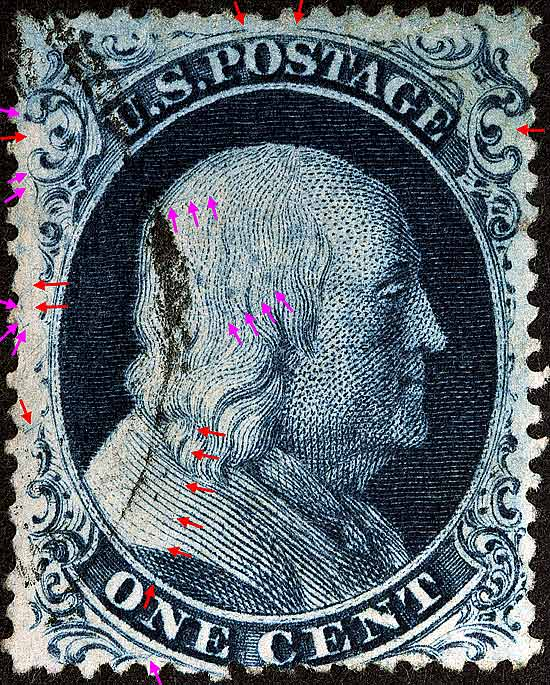
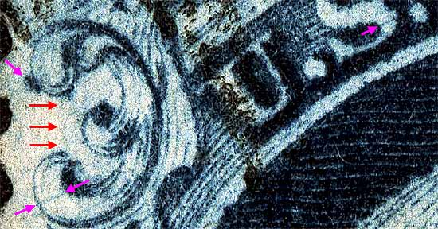
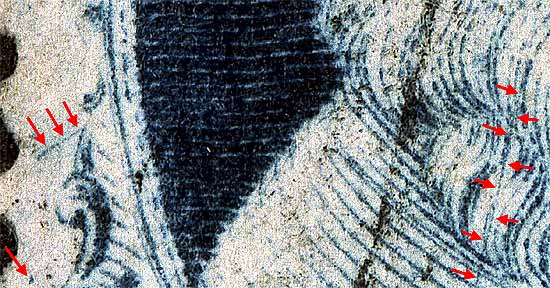
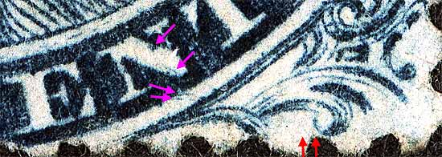
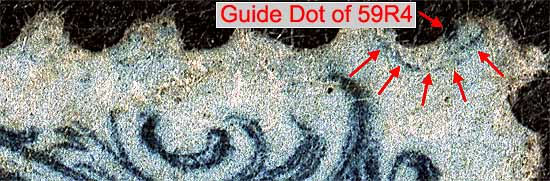

1¢ Franklin Issue of 1851-1857, PLATE 4 Pos 69R4, (Scott #22) |
| Scott #22, Blue, Type IIIa , Relief C Issued both imperforate and perforate. Had this been an imperforate copy then it would be Scott Number 8A. The published plating diagrams indicate many scratches and plating marks. Plate 4 changed it's appearance quickly as it wore and not surprisingly many of the plating marks appeared and then quickly faded away. Examine an another impression of 69R4 to see how the plating marks changed. The violet arrows are marks of interest not shown on the plating diagrams. Courtesy of Richard Celler |
|  |
| Figure 1. (BELOW) The Ashbrook/Neinken plating diagrams indicate a faint vertical line between Ornament "A" and "B." On this impression the line has worn away. The violet arrows are marks of interest not shown on the plating diagrams.
 |
| Figure 2. (BELOW) The Ashbrook/Neinken plating diagrams indicate a long faint vertical line cutting through the downward sloping scratch along the left margin. On this impression, the long vertical line has also worn away. The large scratch in the shoulder and hair can clearly be seen. This will also eventually fade away. Examine an another impression of 69R4 to see how the plating marks changed.
 |
| Figure 3. (BELOW) The violet arrows are marks of interest not shown on the plating diagrams. The red arrows indicate the location of another plating mark which has already worn away.
 |
| Figure 4. (BELOW) Position 59R4 (above this stamp) is one of several positions from the 6th row that had NOT been fully short transferred at the bottom. This can be demonstrated here as the full right plume and guide dot can be seen at the extreme upper right of this position.
 |
| DISCLAIMER and COPYRIGHT INFORMATION: Thanks for visiting this site. I hope you learn something new as we are making new discoveries all the time. You, the visitor, have my permission to link to my pages and to share the INFORMATION with others. The images themselves fall under the fair use guidelines established by the United States Congress and Copyright law. Basically contact us before using. I also ask in return that you send me an e-mail if I have made a mistake, or have made some other technical blunder that in my rush to put these pages up would cause the visitor confusion. Please also visit my other website at www.slingshotvenus.com. and support the live music arts. While your there, be sure to purchase our music. There are not many philatelic rock stars around and we need all the help we can get. :-) I can be reached at: nerdman@ix.netcom.com |